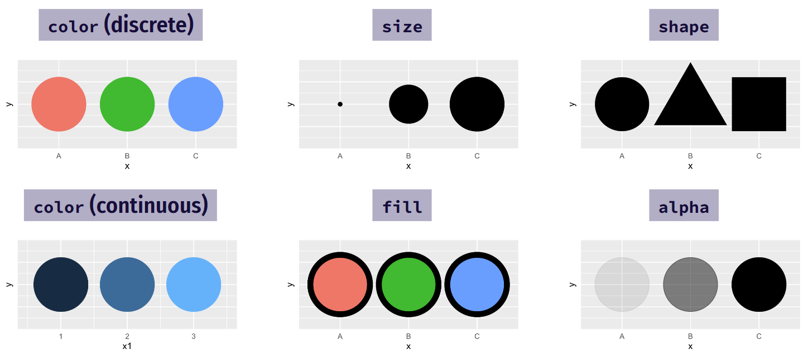
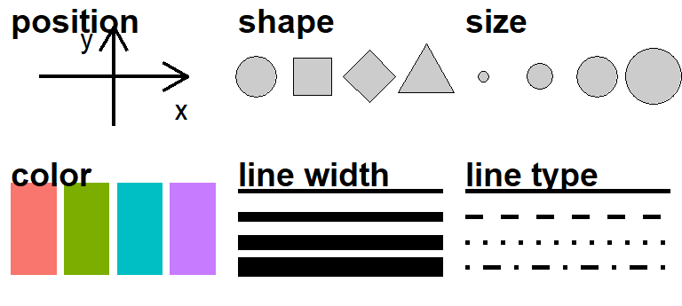
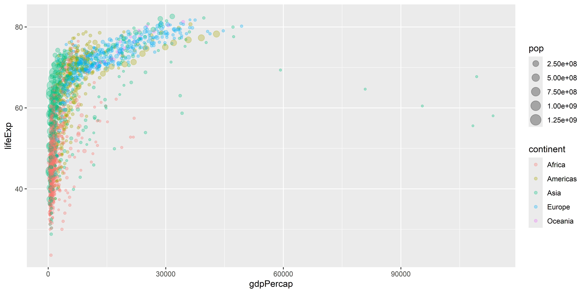
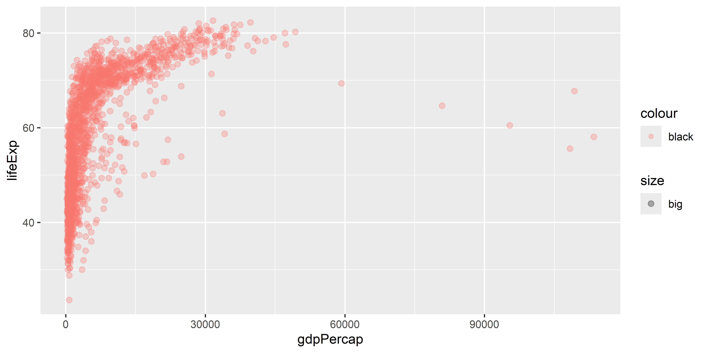
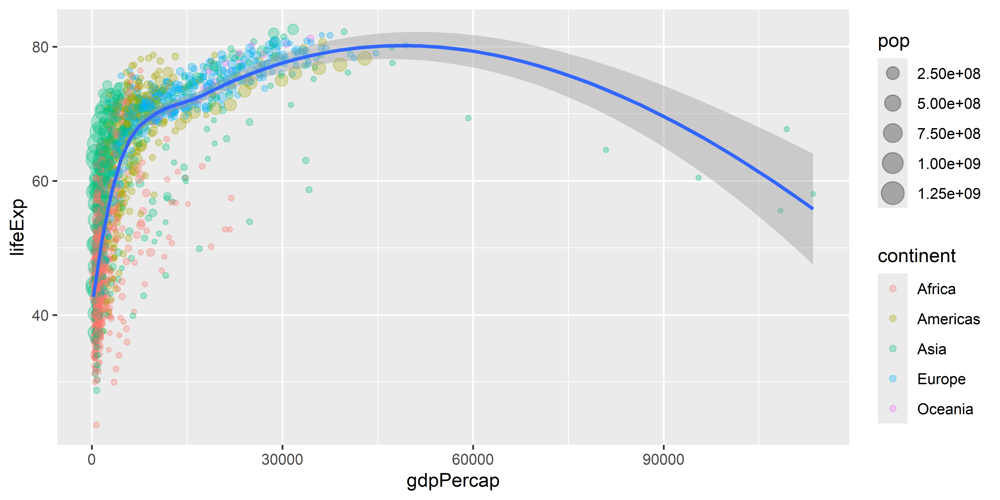
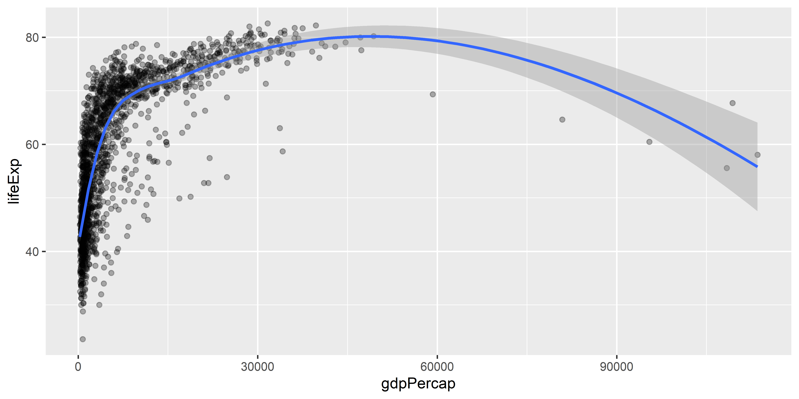
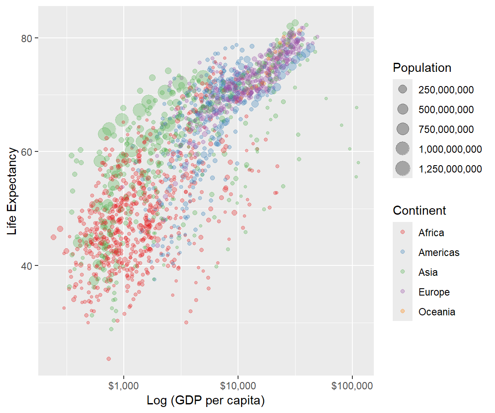
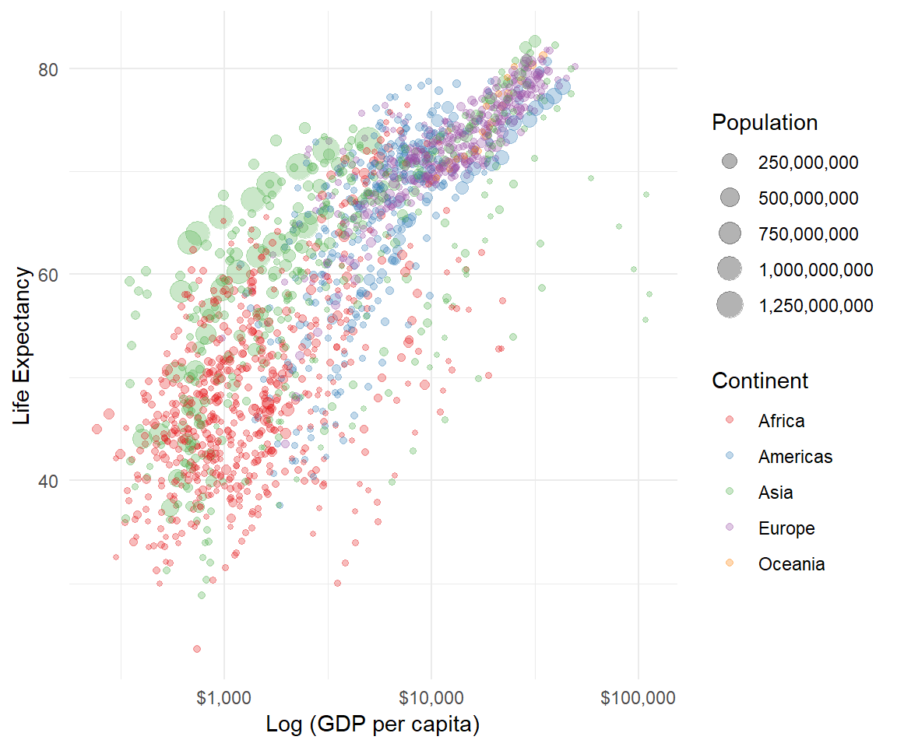
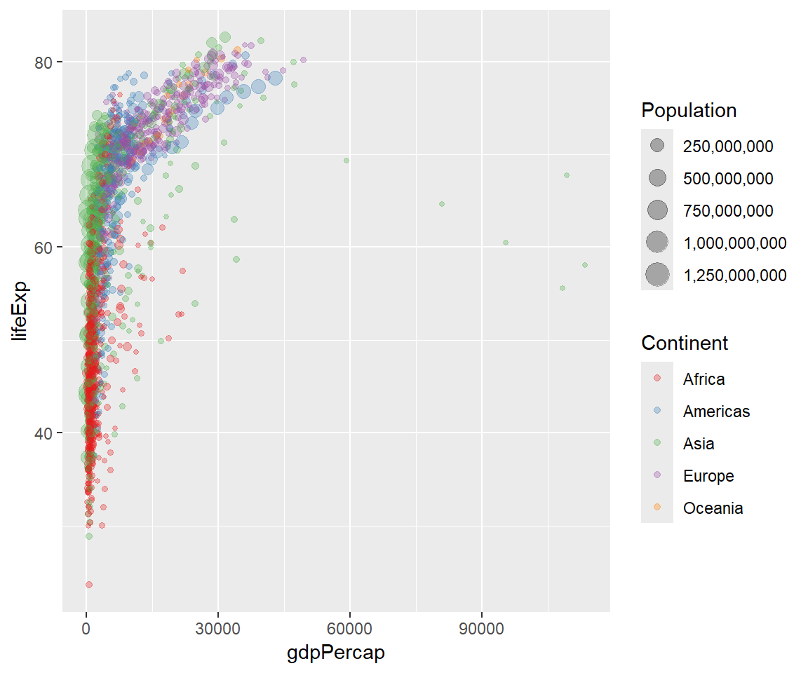

Analítica de Datos
ggplot y tidyverse
Plan para hoy
tidy data
¿Qué es “tidy” data?
- Las 3 características claves son:
- Cada variable forma una columna.
- Cada observación forma una fila.
- Cada tipo de unidad de observación forma una tabla.
¿Por qué tidy data?
- Un conjunto de datos en forma tidy1 facilita la selección de variables, la agrupación, el resumen y la visualización
- Algunas herramientas y paquetes en el
tidyversecomo dplyr o ggplot2 requieren que los datos se organicen de esa manera
El problema: la mayoría de los datos que obtengan no estarán “ordenados” desde el principio \(\rightarrow\) tendrán que remodelarlos
Los paquetes de hoy
- Como vimos la clase pasada, el paquete
tidyversees fundamental para la visualización y transformación de datos.
💪 Ejercicio 1 - (5 minutos)
Abran un R Script, y utilizando la siguiente plantilla, carguen los paquetes tidyverse y gapminder. Instálenlos desde la consola si es la primera vez que usan su PC actual.
El conjunto de datos gapminder
Como vamos a graficar el conjunto de datos de gapminder, es útil saber que contiene datos de panel sobre la esperanza de vida, el tamaño de la población y el PIB per cápita para 142 países desde la década de 1950.
# A tibble: 1,704 × 6
country continent year lifeExp pop gdpPercap
<fct> <fct> <int> <dbl> <int> <dbl>
1 Afghanistan Asia 1952 28.8 8425333 779.
2 Afghanistan Asia 1957 30.3 9240934 821.
3 Afghanistan Asia 1962 32.0 10267083 853.
4 Afghanistan Asia 1967 34.0 11537966 836.
5 Afghanistan Asia 1972 36.1 13079460 740.
6 Afghanistan Asia 1977 38.4 14880372 786.
7 Afghanistan Asia 1982 39.9 12881816 978.
8 Afghanistan Asia 1987 40.8 13867957 852.
9 Afghanistan Asia 1992 41.7 16317921 649.
10 Afghanistan Asia 1997 41.8 22227415 635.
# ℹ 1,694 more rowsgapminder – dimensiones
- Número de filas:
gapminder – primer vistazo
Las siguientes 3 funciones son útiles para evaluar el contenido de una base de datos.
Rows: 1,704
Columns: 6
$ country <fct> "Afghanistan", "Afghanistan", "Afghanistan", "Afghanistan", …
$ continent <fct> Asia, Asia, Asia, Asia, Asia, Asia, Asia, Asia, Asia, Asia, …
$ year <int> 1952, 1957, 1962, 1967, 1972, 1977, 1982, 1987, 1992, 1997, …
$ lifeExp <dbl> 28.801, 30.332, 31.997, 34.020, 36.088, 38.438, 39.854, 40.8…
$ pop <int> 8425333, 9240934, 10267083, 11537966, 13079460, 14880372, 12…
$ gdpPercap <dbl> 779.4453, 820.8530, 853.1007, 836.1971, 739.9811, 786.1134, …# A tibble: 6 × 6
country continent year lifeExp pop gdpPercap
<fct> <fct> <int> <dbl> <int> <dbl>
1 Afghanistan Asia 1952 28.8 8425333 779.
2 Afghanistan Asia 1957 30.3 9240934 821.
3 Afghanistan Asia 1962 32.0 10267083 853.
4 Afghanistan Asia 1967 34.0 11537966 836.
5 Afghanistan Asia 1972 36.1 13079460 740.
6 Afghanistan Asia 1977 38.4 14880372 786.tibble vs. data frame
tibble vs. data frame
- Un tibble1 es una estructura de datos basada en un data frame con algunas mejores que facilitan su uso
- Todos los tibbles son data frames, pero no todos los data frames son tibbles
- Dos diferencias principales entre un tibble y un data frame:
- Impresión
- Selección más estricta
Impresión
Muestra las 10 primeras filas y todas las columnas que quepan en la pantalla. Adicionalmente, muestra el tipo de variable para cada columna.
# A tibble: 1,704 × 6
country continent year lifeExp pop gdpPercap
<fct> <fct> <int> <dbl> <int> <dbl>
1 Afghanistan Asia 1952 28.8 8425333 779.
2 Afghanistan Asia 1957 30.3 9240934 821.
3 Afghanistan Asia 1962 32.0 10267083 853.
4 Afghanistan Asia 1967 34.0 11537966 836.
5 Afghanistan Asia 1972 36.1 13079460 740.
6 Afghanistan Asia 1977 38.4 14880372 786.
7 Afghanistan Asia 1982 39.9 12881816 978.
8 Afghanistan Asia 1987 40.8 13867957 852.
9 Afghanistan Asia 1992 41.7 16317921 649.
10 Afghanistan Asia 1997 41.8 22227415 635.
# ℹ 1,694 more rowsIntentará mostrar todos los datos, o fracasará intentando si el conjunto de datos es muy grande
speed dist
1 4 2
2 4 10
3 7 4
4 7 22
5 8 16
6 9 10
7 10 18
8 10 26
9 10 34
10 11 17
11 11 28
12 12 14
13 12 20
14 12 24
15 12 28
16 13 26
17 13 34
18 13 34
19 13 46
20 14 26
21 14 36
22 14 60
23 14 80
24 15 20
25 15 26
26 15 54
27 16 32
28 16 40
29 17 32
30 17 40
31 17 50
32 18 42
33 18 56
34 18 76
35 18 84
36 19 36
37 19 46
38 19 68
39 20 32
40 20 48
41 20 52
42 20 56
43 20 64
44 22 66
45 23 54
46 24 70
47 24 92
48 24 93
49 24 120
50 25 85Selección más estricta
ggplot2
El paquete ggplot2
Es el principal paquete para visualizar datos en tidyverse
El paquete ggplot2

El paquete ggplot2 creado por Hadley Wickham es uno de los paquetes más populares de todo el mundo R.
- Está construido sobre una teoría de visualización profunda: i.e. The Grammar of Graphics de Leland Wilkinson
Elementos de ggplot2
Hay mucho que decir sobre la implementación de este enfoque de “gramática de gráficos” en ggplot2, pero los tres elementos clave son:
La gráfica está conectada a las variables (“los datos”) a través de varios mapeos estéticos (aestethic mappings).
Una vez el mapeo estético está definido, ustedes pueden representar sus datos en diferentes maneras al elegir diferentes objetos geométricos (i.e. “geoms” como puntos, líneas o barras).
Los gráficos se contruyen por capas.
Esto es un poco abstracto. Repasemos cada elemento uno por uno con algunos gráficos reales.
1. Mapeo estético

1. Mapeo estético
Concentrémonos en la primera línea que contiene el llamado a la función ggplot(). La función acepta varios argumentos incluyendo:
- los datos que estamos usando (i.e.
data = gapminder). - el mapeo estético (i.e.
mapping = aes(x = gdpPercap, y = lifeExp)).
El mapeo estético acá es simple: sólo define un eje x (gdpPercap) y un eje y (lifeExp).
1. Mapeo estético - Tipos
Sin embargo, para tener una idea del poder y la flexibilidad que conlleva este enfoque, consideremos lo que sucede si agregamos alguna de las siguientes estéticas a la línea de la función…

1. Mapeo estético
Noten que borramos la parte “mapping =” al llamar la función. La mayoría de la gente sólo empieza con “aes(…)”, ya que ggplot2 sabe el orden de los argumentos.
1. Mapeo estético
También podemos especificar el mapeo estético en la línea del objeto geométrico que queremos.
1. Mapeo estético
¿Qué salió mal aquí?
Respuesta: El mapeo estético está asociado a variables, no a descripciones!
1. Mapeo estético
Dentro de aes(), pueden mapear una variable a un atributo estético, mientras que fuera pueden asignarle un valor fijo.
💪 Ejercicio 2 - (5 minutos)
Grafiquen las siguientes 4 gráficas. ¿Cuál eligirían y por qué? Respondan en el script usando comentarios precedidos por #.
ggplot(data = gapminder, aes(x = gdpPercap, y = lifeExp, color = continent)) +
geom_point()
ggplot(data = gapminder, aes(x = gdpPercap, y = lifeExp, size = continent)) +
geom_point()
ggplot(data = gapminder, aes(x = gdpPercap, y = lifeExp, shape = continent)) +
geom_point()
ggplot(data = gapminder, aes(x = gdpPercap, y = lifeExp, alpha = continent)) +
geom_point()1. Mapeo estético
En este punto, en lugar de repetir la misma primera línea del código, es más conveniente definir un gráfico intermedio que podamos reutilizar.
2. Objetos Geométricos
Una vez que las relaciones de sus variables hayan sido definidas por los mapeos estéticos, pueden usar y combinar diferentes objetos geométricos para generar diferentes visualizaciones.
2. Objetos Geométricos
Los mapeos estéticos pueden aplicarse de manera diferente en cada geometría.
2. Objetos Geométricos
Global vs Local
Cualquier mapeo estético en ggplot() se mostrará en TODAS las capas
2. Objetos Geométricos
Global vs Local
Cualquier mapeo estético en los objetos geométricos geom_layer aplica SOLO en esas capas

2. Objetos Geométricos
De igual manera, tengan en cuenta que algunos objetos geométricos solo aceptan un subconjunto de asignaciones. Por ejemplo, geom_density() no sabe qué hacer con la asignación estética “y”.
2. Objetos Geométricos
Podemos solucionar este error siendo más cuidadosos con cómo construimos la gráfica.
2. Objetos Geométricos - Tipos
En la documentación de ggplot encuentran todos los posibles objetos geométricos.
3. Construir la gráfica por capas
Ya hemos visto cómo podemos encadenar (o “superponer”) elementos consecutivos del gráfico utilizando el conector +.
- El que podamos crear y luego reutilizar un objeto intermedio del gráfico (por ejemplo, “p”) es una prueba de esto
Mediante este sencillo proceso de capas, pueden lograr visualizaciones con una complejidad realmente impresionantes.
No tienen que transformar sus datos originales; ggplot2 se encarga de todo eso
Las siguientes diapositivas les darán un ejemplo de esto…
3. Construir la gráfica por capas
3. Construir la gráfica por capas
3. Construir la gráfica por capas

3. Construir la gráfica por capas
p +
geom_point(aes(size = pop, col = continent), alpha = 0.3) +
scale_color_brewer(name = "Continent", palette = "Set1") + ## Different colour scale
scale_size(name = "Population", labels = scales::comma) + ## Different point (i.e. legend) scale
scale_x_log10(labels = scales::dollar) ## Switch to logarithmic scale on x-axis. Use dollar units.
3. Construir la gráfica por capas
p +
geom_point(aes(size = pop, col = continent), alpha = 0.3) +
scale_color_brewer(name = "Continent", palette = "Set1") + ## Different colour scale
scale_size(name = "Population", labels = scales::comma) + ## Different point (i.e. legend) scale
scale_x_log10(labels = scales::dollar) + ## Switch to logarithmic scale on x-axis. Use dollar units.
labs(x = "Log (GDP per capita)", y = "Life Expectancy") ## Better axis titles
3. Construir la gráfica por capas
p +
geom_point(aes(size = pop, col = continent), alpha = 0.3) +
scale_color_brewer(name = "Continent", palette = "Set1") + ## Different colour scale
scale_size(name = "Population", labels = scales::comma) + ## Different point (i.e. legend) scale
scale_x_log10(labels = scales::dollar) + ## Switch to logarithmic scale on x-axis. Use dollar units.
labs(x = "Log (GDP per capita)", y = "Life Expectancy") + ## Better axis titles
theme_minimal() ## Try a minimal (b&w) plot theme
3. Construir la gráfica por capas
Exportar con ggsave()
ggsave("filename.png", width = , height = )
Por defecto, guarda el último gráfico que hicieron
filenamees el directorio y el nombre del archivoSoporta
.jpg,.png,.pdfy otros formatosLa otra manera es con el botón de exportar en el visualizador de gráficos
El operador pipe
El operador pipe en acción
El operador pipe (
|>) es una herramienta para pasar información de un proceso al otroLas dos siguientes líneas de código hacen lo mismo:
gapminder |> filter(year == 2007) |> group_by(continent) |> summarize(mean_gpdpercapita = mean(gdpPercap, na.rm = TRUE)) |> arrange(desc(mean_gpdpercapita))
arrange(summarize(group_by(filter(gapminder, year == 2007), continent), mean_gpdpercapita = mean(gdpPercap, na.rm = TRUE)), desc(mean_gpdpercapita))La primera línea se lee de izquierda a derecha, exactamente como uno pensaría los procesos
La segunda línea invierte totalmente este orden lógico (¡la operación final viene primero!)
El operador pipe en acción
1gapminder- 1
- Toma el data frame gapminder
# A tibble: 1,704 × 6
country continent year lifeExp pop gdpPercap
<fct> <fct> <int> <dbl> <int> <dbl>
1 Afghanistan Asia 1952 28.8 8425333 779.
2 Afghanistan Asia 1957 30.3 9240934 821.
3 Afghanistan Asia 1962 32.0 10267083 853.
4 Afghanistan Asia 1967 34.0 11537966 836.
5 Afghanistan Asia 1972 36.1 13079460 740.
6 Afghanistan Asia 1977 38.4 14880372 786.
7 Afghanistan Asia 1982 39.9 12881816 978.
8 Afghanistan Asia 1987 40.8 13867957 852.
9 Afghanistan Asia 1992 41.7 16317921 649.
10 Afghanistan Asia 1997 41.8 22227415 635.
# ℹ 1,694 more rowsEl operador pipe en acción
- 1
- Toma el data frame gapminder,
- 2
- y luego selecciona las observaciones en el año 2007
# A tibble: 142 × 6
country continent year lifeExp pop gdpPercap
<fct> <fct> <int> <dbl> <int> <dbl>
1 Afghanistan Asia 2007 43.8 31889923 975.
2 Albania Europe 2007 76.4 3600523 5937.
3 Algeria Africa 2007 72.3 33333216 6223.
4 Angola Africa 2007 42.7 12420476 4797.
5 Argentina Americas 2007 75.3 40301927 12779.
6 Australia Oceania 2007 81.2 20434176 34435.
7 Austria Europe 2007 79.8 8199783 36126.
8 Bahrain Asia 2007 75.6 708573 29796.
9 Bangladesh Asia 2007 64.1 150448339 1391.
10 Belgium Europe 2007 79.4 10392226 33693.
# ℹ 132 more rowsEl operador pipe en acción
- 1
- Toma el data frame gapminder,
- 2
- y luego selecciona las observaciones en el año 2002,
- 3
- y luego agrupa por continente
# A tibble: 142 × 6
# Groups: continent [5]
country continent year lifeExp pop gdpPercap
<fct> <fct> <int> <dbl> <int> <dbl>
1 Afghanistan Asia 2002 42.1 25268405 727.
2 Albania Europe 2002 75.7 3508512 4604.
3 Algeria Africa 2002 71.0 31287142 5288.
4 Angola Africa 2002 41.0 10866106 2773.
5 Argentina Americas 2002 74.3 38331121 8798.
6 Australia Oceania 2002 80.4 19546792 30688.
7 Austria Europe 2002 79.0 8148312 32418.
8 Bahrain Asia 2002 74.8 656397 23404.
9 Bangladesh Asia 2002 62.0 135656790 1136.
10 Belgium Europe 2002 78.3 10311970 30486.
# ℹ 132 more rowsEl operador pipe en acción
1gapminder |>
2 filter(year == 2007) |>
3 group_by(continent) |>
4 summarize(mean_gpdpercapita = mean(gdpPercap, na.rm = TRUE))- 1
- Toma el data frame gapminder,
- 2
- y luego selecciona las observaciones en el año 2007,
- 3
- y luego agrupa por continente,
- 4
- y luego calcula el GDP per cápita promedio para cada continente
# A tibble: 5 × 2
continent mean_gpdpercapita
<fct> <dbl>
1 Africa 3089.
2 Americas 11003.
3 Asia 12473.
4 Europe 25054.
5 Oceania 29810.El operador pipe en acción
1gapminder |>
2 filter(year == 2007) |>
3 group_by(continent) |>
4 summarize(mean_gpdpercapita = mean(gdpPercap, na.rm = TRUE)) |>
5 arrange(desc(mean_gpdpercapita))- 1
- Toma el data frame gapminder,
- 2
- y luego selecciona las observaciones en el año 2007,
- 3
- y luego agrupa por continente,
- 4
- y luego calcula el GDP per cápita para cada continente,
- 5
- y luego organiza de manera descendente basado en el GDP per cápita promedio.
# A tibble: 5 × 2
continent mean_gpdpercapita
<fct> <dbl>
1 Oceania 29810.
2 Europe 25054.
3 Asia 12473.
4 Americas 11003.
5 Africa 3089.Algunas consideraciones sobre |>
- Usar espacio vertical no cuesta nada y genera un código mucho más legible y fácil de escribir que amontonar cosas horizontalmente
Otra manera de denotar el pipe operator es
%>%. Hay diferencias entre ambos pero van más allá del propósito del cursoRevisen el post |> vs. %>% si quieren profundizar en el tema
dplyr

dplyr
Es el principal paquete para transformar datos en tidyverse
Símbolos Lógicos
| Test | Meaning | Test | Meaning |
|---|---|---|---|
x < y |
Menor que | x %in% y |
En (miembro de un grupo) |
x > y |
Mayor que | is.na(x) |
Es missing |
== |
Igual a | !is.na(x) |
No es missing |
x <= y |
Menor o igual a | ||
x >= y |
Mayor o igual a | ||
x != y |
Diferente a |
Los verbos del dplyr
Extraer filas con filter() |
 |
Extraer columnas con select() |
 |
Ordenar filas con arrange() |
 |
Crea nuevas columnas con mutate() |
 |
Resumir variables por grupo con group_by() |> summarize() |
 |
La sintaxis común
VERB(DATA, …)
- VERB = función/verbo de dplyr
- DATA = los datos a transformar
- … = la operación que haga el verbo
1) dplyr::filter
filter(.data = DATA, …)
- DATA = los datos a transformar
- … = Una o más condiciones.
filter()selecciona cada fila para cual la condición es verdadera
1) dplyr::filter
Podemos encadenar múltiples comandos de filtro con el pipe (|>), o simplemente separarlos dentro de un solo comando de filtro usando comas.
# A tibble: 4 × 14
name height mass hair_color skin_color eye_color birth_year sex gender
<chr> <int> <dbl> <chr> <chr> <chr> <dbl> <chr> <chr>
1 Darth Va… 202 136 none white yellow 41.9 male mascu…
2 Qui-Gon … 193 89 brown fair blue 92 male mascu…
3 Dooku 193 80 white fair brown 102 male mascu…
4 Bail Pre… 191 NA black tan brown 67 male mascu…
# ℹ 5 more variables: homeworld <chr>, species <chr>, films <list>,
# vehicles <list>, starships <list>Otros operadores lógicos
a & b significa a y b
# A tibble: 4 × 3
name species height
<chr> <chr> <int>
1 Darth Vader Human 202
2 Qui-Gon Jinn Human 193
3 Dooku Human 193
4 Bail Prestor Organa Human 191a | b significa a o b
# A tibble: 54 × 3
name species height
<chr> <chr> <int>
1 Luke Skywalker Human 172
2 Darth Vader Human 202
3 Leia Organa Human 150
4 Owen Lars Human 178
5 Beru Whitesun Lars Human 165
6 Biggs Darklighter Human 183
7 Obi-Wan Kenobi Human 182
8 Anakin Skywalker Human 188
9 Wilhuff Tarkin Human 180
10 Chewbacca Wookiee 228
# ℹ 44 more rows1) dplyr::filter
Las expresiones regulares también funcionan dentro de la función.
# A tibble: 3 × 14
name height mass hair_color skin_color eye_color birth_year sex gender
<chr> <int> <dbl> <chr> <chr> <chr> <dbl> <chr> <chr>
1 Luke Sky… 172 77 blond fair blue 19 male mascu…
2 Anakin S… 188 84 blond fair blue 41.9 male mascu…
3 Shmi Sky… 163 NA black fair brown 72 fema… femin…
# ℹ 5 more variables: homeworld <chr>, species <chr>, films <list>,
# vehicles <list>, starships <list>1) dplyr::filter
Un uso muy común de filter es identificar (o eliminar) casos con valores faltantes (missings).
# A tibble: 6 × 14
name height mass hair_color skin_color eye_color birth_year sex gender
<chr> <int> <dbl> <chr> <chr> <chr> <dbl> <chr> <chr>
1 Arvel Cr… NA NA brown fair brown NA male mascu…
2 Finn NA NA black dark dark NA male mascu…
3 Rey NA NA brown light hazel NA fema… femin…
4 Poe Dame… NA NA brown light brown NA male mascu…
5 BB8 NA NA none none black NA none mascu…
6 Captain … NA NA none none unknown NA fema… femin…
# ℹ 5 more variables: homeworld <chr>, species <chr>, films <list>,
# vehicles <list>, starships <list>Para eliminar valores faltantes, simplemente usen la negación: filter(!is.na(height)). Inténtenlo ustedes.
Errores comunes
Dos de los errores más comunes son:
- Usar “=” en vez de “==”
- No usar las comillas cuando las variables son de tipo texto
Incorrecto
filter(starwars,
species = “Human”)
filter(starwars,
species == Human)
Correcto
filter(starwars,
species == “Human”)
filter(starwars,
species == “Human”)
Errores comunes
Otros errores comunes son:
- Tratar de agregar las condiciones sin comas o conectores lógicos
- Usar las comas cuando se pueden usar los conectores lógicos
Incorrecto
filter(starwars,
170 < height < 190 )
filter(starwars,
name = “Anakin Skywalker”, name = “Rey”, name = “Finn” )
Correcto
filter(starwars,
height > 170, height < 190)
filter(starwars,
name %in% c(“Anakin Skywalker”, “Rey”, “Finn”) )
💪 Ejercicio 4 - (5 minutos)
Para los datos de gapminder, usen filter() y operadores lógicos para seleccionar:
Los datos para el siguiente país que quisieran visitar
¿Por qué ese país?
Todos los datos en el año 2007 y para el continente del país en los puntos anteriores
Filas donde la expectativa de vida sea mayor a 82 en el año 2007 y que no sean Oceanía
2) dplyr::arrange
# A tibble: 87 × 14
name height mass hair_color skin_color eye_color birth_year sex gender
<chr> <int> <dbl> <chr> <chr> <chr> <dbl> <chr> <chr>
1 Wicket … 88 20 brown brown brown 8 male mascu…
2 IG-88 200 140 none metal red 15 none mascu…
3 Luke Sk… 172 77 blond fair blue 19 male mascu…
4 Leia Or… 150 49 brown light brown 19 fema… femin…
5 Wedge A… 170 77 brown fair hazel 21 male mascu…
6 Plo Koon 188 80 none orange black 22 male mascu…
7 Biggs D… 183 84 black light brown 24 male mascu…
8 Han Solo 180 80 brown fair brown 29 male mascu…
9 Lando C… 177 79 black dark brown 31 male mascu…
10 Boba Fe… 183 78.2 black fair brown 31.5 male mascu…
# ℹ 77 more rows
# ℹ 5 more variables: homeworld <chr>, species <chr>, films <list>,
# vehicles <list>, starships <list>
Nota: Si se organiza una variable basado en caracteres, se ordenarán alfabéticamente. Intenten ordenando los datos según la variable “name”.
2) dplyr::arrange
También podemos organizar los elementos en orden descendente utilizando arrange(desc()).
# A tibble: 87 × 14
name height mass hair_color skin_color eye_color birth_year sex gender
<chr> <int> <dbl> <chr> <chr> <chr> <dbl> <chr> <chr>
1 Yoda 66 17 white green brown 896 male mascu…
2 Jabba D… 175 1358 <NA> green-tan… orange 600 herm… mascu…
3 Chewbac… 228 112 brown unknown blue 200 male mascu…
4 C-3PO 167 75 <NA> gold yellow 112 none mascu…
5 Dooku 193 80 white fair brown 102 male mascu…
6 Qui-Gon… 193 89 brown fair blue 92 male mascu…
7 Ki-Adi-… 198 82 white pale yellow 92 male mascu…
8 Finis V… 170 NA blond fair blue 91 male mascu…
9 Palpati… 170 75 grey pale yellow 82 male mascu…
10 Cliegg … 183 NA brown fair blue 82 male mascu…
# ℹ 77 more rows
# ℹ 5 more variables: homeworld <chr>, species <chr>, films <list>,
# vehicles <list>, starships <list>💪 Ejercicio 5 - (5 minutos)
¿Cuál es la expectativa de vida más baja en
gapminder? ¿Qué país la tiene y en qué año?¿Cuál es la expectativa de vida más alta en
gapminder? ¿Qué país la tiene y en qué año?
3) dplyr::select
Utilicen comas para seleccionar varias columnas de una base de datos (usen “first:last” para columnas consecutivas). Anulen la selección de una columna con “-”.
# A tibble: 87 × 5
name mass hair_color skin_color species
<chr> <dbl> <chr> <chr> <chr>
1 Luke Skywalker 77 blond fair Human
2 C-3PO 75 <NA> gold Droid
3 R2-D2 32 <NA> white, blue Droid
4 Darth Vader 136 none white Human
5 Leia Organa 49 brown light Human
6 Owen Lars 120 brown, grey light Human
7 Beru Whitesun Lars 75 brown light Human
8 R5-D4 32 <NA> white, red Droid
9 Biggs Darklighter 84 black light Human
10 Obi-Wan Kenobi 77 auburn, white fair Human
# ℹ 77 more rows3) dplyr::select
También pueden cambiar el nombre de algunas (o todas) de las variables seleccionadas.
# A tibble: 87 × 3
alias crib sex
<chr> <chr> <chr>
1 Luke Skywalker Tatooine masculine
2 C-3PO Tatooine masculine
3 R2-D2 Naboo masculine
4 Darth Vader Tatooine masculine
5 Leia Organa Alderaan feminine
6 Owen Lars Tatooine masculine
7 Beru Whitesun Lars Tatooine feminine
8 R5-D4 Tatooine masculine
9 Biggs Darklighter Tatooine masculine
10 Obi-Wan Kenobi Stewjon masculine
# ℹ 77 more rowsSi solo desean cambiar el nombre de las columnas sin seleccionarlas, pueden utilizar rename. Prueben esto ahora reemplazando select(...) en el fragmento de código anterior por rename(...).
3) dplyr::select
La opción select(contains(PATTERN)) proporciona un buen atajo en casos relevantes.
# A tibble: 87 × 4
name hair_color skin_color eye_color
<chr> <chr> <chr> <chr>
1 Luke Skywalker blond fair blue
2 C-3PO <NA> gold yellow
3 R2-D2 <NA> white, blue red
4 Darth Vader none white yellow
5 Leia Organa brown light brown
6 Owen Lars brown, grey light blue
7 Beru Whitesun Lars brown light blue
8 R5-D4 <NA> white, red red
9 Biggs Darklighter black light brown
10 Obi-Wan Kenobi auburn, white fair blue-gray
# ℹ 77 more rows3) dplyr::select
La opción select(..., everything()) es otro atajo útil si solo desean traer algunas variables al “frente” de la base de datos.
# A tibble: 5 × 14
species homeworld name height mass hair_color skin_color eye_color
<chr> <chr> <chr> <int> <dbl> <chr> <chr> <chr>
1 Human Tatooine Luke Skywalker 172 77 blond fair blue
2 Droid Tatooine C-3PO 167 75 <NA> gold yellow
3 Droid Naboo R2-D2 96 32 <NA> white, blue red
4 Human Tatooine Darth Vader 202 136 none white yellow
5 Human Alderaan Leia Organa 150 49 brown light brown
# ℹ 6 more variables: birth_year <dbl>, sex <chr>, gender <chr>, films <list>,
# vehicles <list>, starships <list>💪 Ejercicio 6 - (5 minutos)
Seleccionen solo las columnas
year,lifeExpycountryengapminderSeleccionen todas las columnas excepto
year,lifeExpycountryengapminder
4) dplyr::mutate
Pueden crear nuevas columnas desde cero o (más comúnmente) como transformaciones de columnas existentes.
starwars |>
select(name, birth_year) |>
mutate(dog_years = birth_year * 7) |>
mutate(comment = paste0(name, " is ", dog_years, " in dog years."))# A tibble: 87 × 4
name birth_year dog_years comment
<chr> <dbl> <dbl> <chr>
1 Luke Skywalker 19 133 Luke Skywalker is 133 in dog years.
2 C-3PO 112 784 C-3PO is 784 in dog years.
3 R2-D2 33 231 R2-D2 is 231 in dog years.
4 Darth Vader 41.9 293. Darth Vader is 293.3 in dog years.
5 Leia Organa 19 133 Leia Organa is 133 in dog years.
6 Owen Lars 52 364 Owen Lars is 364 in dog years.
7 Beru Whitesun Lars 47 329 Beru Whitesun Lars is 329 in dog yea…
8 R5-D4 NA NA R5-D4 is NA in dog years.
9 Biggs Darklighter 24 168 Biggs Darklighter is 168 in dog year…
10 Obi-Wan Kenobi 57 399 Obi-Wan Kenobi is 399 in dog years.
# ℹ 77 more rows4) dplyr::mutate
Nota: mutate tiene en cuenta el orden, por lo que pueden encadenar múltiples cambios en un sólo uso de la función.
starwars |>
select(name, birth_year) |>
mutate(
dog_years = birth_year * 7, ## Separate with a comma
comment = paste0(name, " is ", dog_years, " in dog years.")
)# A tibble: 87 × 4
name birth_year dog_years comment
<chr> <dbl> <dbl> <chr>
1 Luke Skywalker 19 133 Luke Skywalker is 133 in dog years.
2 C-3PO 112 784 C-3PO is 784 in dog years.
3 R2-D2 33 231 R2-D2 is 231 in dog years.
4 Darth Vader 41.9 293. Darth Vader is 293.3 in dog years.
5 Leia Organa 19 133 Leia Organa is 133 in dog years.
6 Owen Lars 52 364 Owen Lars is 364 in dog years.
7 Beru Whitesun Lars 47 329 Beru Whitesun Lars is 329 in dog yea…
8 R5-D4 NA NA R5-D4 is NA in dog years.
9 Biggs Darklighter 24 168 Biggs Darklighter is 168 in dog year…
10 Obi-Wan Kenobi 57 399 Obi-Wan Kenobi is 399 in dog years.
# ℹ 77 more rowsifelse
ifelse(TEST, VALUE_IF_TRUE, VALUE_IF_FALSE)
- TEST = Una condición lógica
- VALUE_IF_TRUE = Lo que pasa si la condición se cumple
- VALUE_IF_FALSE = Lo que pasa si la condición no se cumple
4) dplyr::mutate
Los operadores lógicos y condicionales también funcionan bien con mutate.
starwars |>
select(name, height) |>
filter(name %in% c("Luke Skywalker", "Anakin Skywalker")) |>
mutate(tall1 = height > 180) |>
mutate(tall2 = ifelse(height > 180, "Tall", "Short")) ## Same effect, but can choose labels# A tibble: 2 × 4
name height tall1 tall2
<chr> <int> <lgl> <chr>
1 Luke Skywalker 172 FALSE Short
2 Anakin Skywalker 188 TRUE Tall 4) dplyr::mutate
Por último, la combinación de mutate con la función across les permite trabajar fácilmente en un subconjunto de variables. Por ejemplo:
# A tibble: 5 × 6
name height mass hair_color skin_color eye_color
<chr> <int> <dbl> <chr> <chr> <chr>
1 LUKE SKYWALKER 172 77 BLOND FAIR BLUE
2 C-3PO 167 75 <NA> GOLD YELLOW
3 R2-D2 96 32 <NA> WHITE, BLUE RED
4 DARTH VADER 202 136 NONE WHITE YELLOW
5 LEIA ORGANA 150 49 BROWN LIGHT BROWN 💪 Ejercicio 7 - (5 minutos)
Creen una variable llamada
africaque seaTRUEsi el país está en el continente africanoAgreguen una columna que sea el logaritmo del GDP per cápita (Pista: usen la función
log())Conviertan la expectativa de vida de años a meses
5) dplyr::summarise
Particularmente útil en combinación con el comando group_by.
# A tibble: 42 × 3
# Groups: species [38]
species gender mean_height
<chr> <chr> <dbl>
1 Aleena masculine 79
2 Besalisk masculine 198
3 Cerean masculine 198
4 Chagrian masculine 196
5 Clawdite feminine 168
6 Droid feminine 96
7 Droid masculine 140
8 Dug masculine 112
9 Ewok masculine 88
10 Geonosian masculine 183
# ℹ 32 more rows5) dplyr::summarise
Tengan en cuenta que incluir na.rm = TRUE (o su alias na.rm = T) suele ser una buena idea con estas funciones. De lo contrario, cualquier valor faltante se propagará también al valor resumido.
5) dplyr::summarise
El mismo flujo de código basado en across que vimos con mutate unas diapositivas atrás también funciona con summarise. Por ejemplo:
💪 Ejercicio 8 - (5 minutos)
Calculen el GDP per cápita promedio en 1977 para cada continente
¿Por qué el siguiente código no funciona? ¿Cómo lo pueden arreglar?
Otros verbos del dplyr
slice: Selecciona filas por posición en lugar de filtrar por valores.
# A tibble: 2 × 14
name height mass hair_color skin_color eye_color birth_year sex gender
<chr> <int> <dbl> <chr> <chr> <chr> <dbl> <chr> <chr>
1 Luke Sky… 172 77 blond fair blue 19 male mascu…
2 Leia Org… 150 49 brown light brown 19 fema… femin…
# ℹ 5 more variables: homeworld <chr>, species <chr>, films <list>,
# vehicles <list>, starships <list>Otros verbos del dplyr
count y distinct: Cuentan y aíslan observaciones únicas.
Otros verbos del dplyr
- También se puede usar una combinación de
mutate,group_byyn()
# A tibble: 10 × 3
# Groups: species [2]
name species num
<chr> <chr> <int>
1 Luke Skywalker Human 35
2 C-3PO Droid 6
3 R2-D2 Droid 6
4 Darth Vader Human 35
5 Leia Organa Human 35
6 Owen Lars Human 35
7 Beru Whitesun Lars Human 35
8 R5-D4 Droid 6
9 Biggs Darklighter Human 35
10 Obi-Wan Kenobi Human 35Modificando un data frame
Cómo y cuándo modificar un data frame
Creemos un data frame para usar como ejemlo:
Cómo y cuándo modificar un data frame
Haga algo y muéstrelo
Cómo y cuándo modificar un data frame
Haga algo, guarde el resultado, modifique el original
Cómo y cuándo modificar un data frame
Haga algo, guarde el resultado, modifique el original cuando no debería
Cómo y cuándo modificar un data frame
Haga algo, guarde el resultado, modifique el
data frame original